MSYS
What's all about?
MSYS stands for Modulare (Digital) Systems. Describing a system, where each component of a process has certain interfaces to interact with each other.

The goal of MSYS is to give a standard to exchange and include process based knowledge and expertise.
Enabling users from all over the world to participate, by providing or include expert knowledge in there projects, a new age digitized development and design process could be started.
Learn below how you could use MSYS, or read about the technology behind MSYS and get inspired by the projects already done, or join our community!